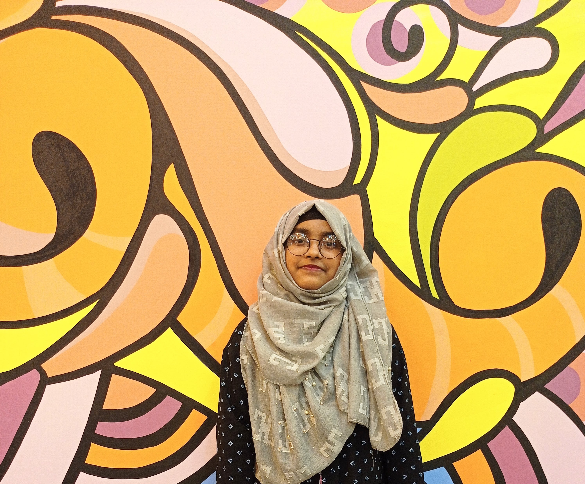

Curriculum Vitac
By
Jannatul Fardus Armin

Jannatul Fardus Armin
Mobile Number:016########
Email:jannatul@gmail.com
I want to learn Web Development & Design. Thats why I am joining this platform.
Computer Skill
- MS-Word
- Excel
- Power Point
Personal Information
- I am an honest person.
- A young, determined hard and smart working person. I believe in task based roles and complete ownership of
work.
- Languages Known: Bangla, English, Hindi
- Hobbies: Historical place and travel tour,Watching cricket matches,Love reading story books, Noble
Reading,Capture life stories,Writing an autobiography,family history.
Plan for next 02 years
Complete my graduation with a good result.I Want to be a professor and Upgrade my computer Skill.I want to gain many others skill like web design & development,Video Editing.